表格视图扩展
表格视图扩展,可以用来直接在ai中显示表格，并可以设置表格样式
前言
本来有个教程，教大家如何显示表格，但是有网友反映还是不够简洁，现在我把这个方法进一步打包成了扩展，真正做到开箱即用。
先上图看看效果如何：
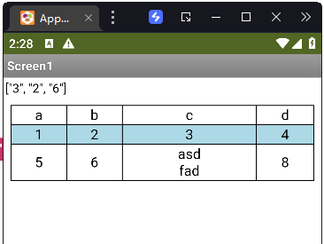
相关代码块
初始化
指定表格要显示在哪个布局之中（可以是垂直布局或者水平布局均可）
不需要垂直滚动布局或者水平滚动布局，因为本扩展可以处理滚动。
设置数据
data需要是一个列表的列表
每次设置数据，会覆盖前面的数据。
设置单个样式
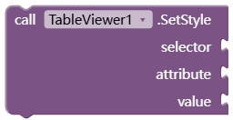
样式设置完全是css的标准，具体请搜索如何写css的样式。
这个可以使用多次，每次设置一个选择器的一个属性。
selector 选择器
attribute 属性名
value 属性值
常用的selector：
| 需要 | selector | 说明 | |
|---|---|---|---|
| 1. | table | 整个表格 | |
| 2. | th | 表头 | |
| 3. | tr | 所有行 | |
| 4. | td | 所有单元格 | |
| 5. | tr:nth-child(1) | 第n行 （所有偶数行可以写为tr:nth-child(2n)，奇数行就是tr:nth-child(2n+1)） | |
| 6. | td:nth-child(1) | 第n列 （奇数偶数列原理同上） | |
| 7. | #r1c1 | 第n行第n列的单元格 （注意别漏掉#，因为我已经将每个单元格的id设置为了r1c1格式） |
常用的attribute：
| 序号 | 属性 | 说明 | |
|---|---|---|---|
| 1 | background-color | 背景色 | |
| 2 | color | 文本颜色 | |
| 3 | padding | 内边距 | |
| 4 | margin | 外边距 | |
| 5 | width | 宽度 | |
| 6 | height | 高度 | |
| 7 | font-size | 字号 | |
| 8 | border-width | 边框宽度 | |
| 9 | border-color | 边框颜色 |
设置样式表
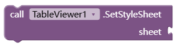
如果你有很多样式要写，用上面的SetStyle就需要多个，比较麻烦，可以使用这个块，直接把样式表写在文本中。
这个块只能使用一次，后面调用会把前面的覆盖。所以把需要写的样式一次性都写在这里面。
显示表格
在修改数据和设置样式后，必须调用这个showTable,否则样式或数据不更新。
表格显示完成，会引发OnShowTable事件。
设置类
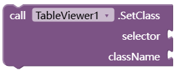
设置javascript
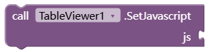
只是插入一段js，并不执行，需要调用ShowTable才会执行。
清除表格
原来设置的所有数据和样式都被清空（仅保留默认的样式）。
清除样式
所有样式被清除
滚动表格
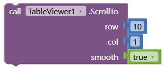
将表格左上角（若可以）滑动到某行某列（让该单元格可见）。
smooth: 是否平滑滚动
滚动完成，会引发OnScroll事件。
运行javascript
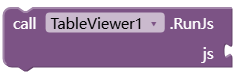
js会被立即运行，无需重新调用showTable。
运行完毕，若有返回值，会引发AfterRunJs事件。
使用javascript修改样式
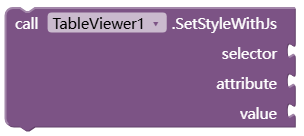
样式会立即执行，无需重新调用showTable。是上面RunJs的重新包装块。
内置常用的样式
返回网页源码
是否包含表头
是否包含表尾
以下块都可以通过SetStyle块来实现，只是为了方便写成内置块。
设置单元格内边距
设置表头（第一行）背景色
目前只支持例如red、green这样，或者#abcdef这种16进制，不支持AppInventer中的颜色。（下同）
设置边框颜色
设置边框宽度
设置所有文本字号
表格显示完成事件
js执行完成事件
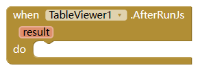
表格被点击事件
表格被点击时，返回点击位置的行、列、内容
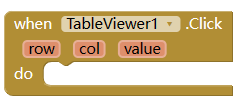
表格滚动事件
表格滚动时（手动或通过代码）引发
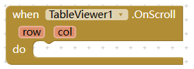
示例
例子1：基本用法
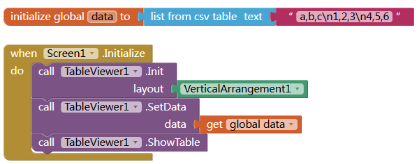
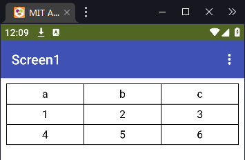
例子2：高亮当前选中单元格，并取消高亮上次单元格
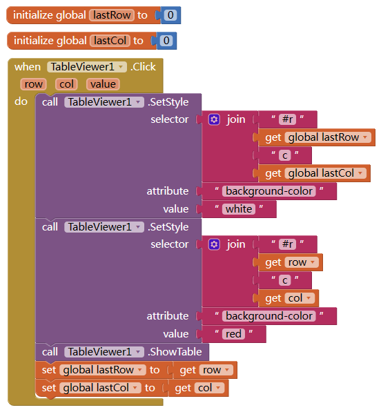
例子3：固定表格第一行。这样在上下滚动时，表头固定在屏幕上方。
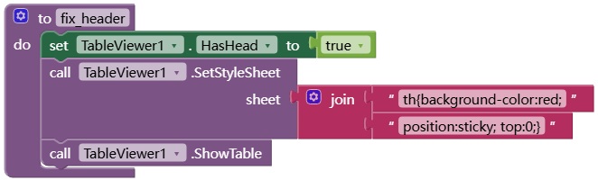
同理，固定左侧第一列：
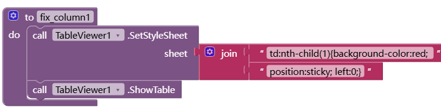
例子4：合并单元格
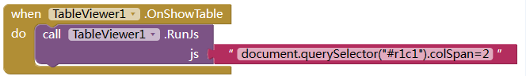
下载链接
cn.kevinkun.TableViewer.v8.aix
cn.kevinkun.TableViewer.v9.aix
更多讨论，请[查看这里]([FREE] TableViewer - fully style customized to show table data - Extensions - MIT App Inventor Community)